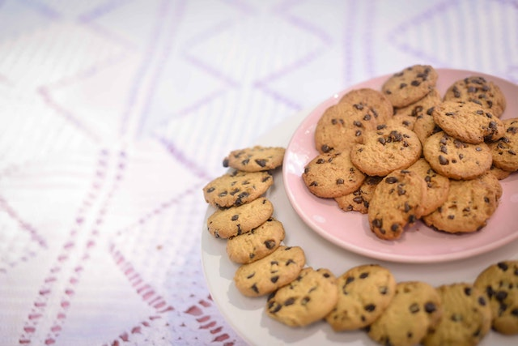

Nestlé® Toll House® Chocolate Chip Cookies

Description
Instructions for easy to bake, yummy chocolate chip cookies
Ingredients
- 2 1/4 cups all-purpose flour
- 1 teaspoon baking soda
- 1 teaspoon salt
- 1 cup (2 sticks) butter, softened
- 3/4 cup granulated sugar
- 3/4 cup packed brown sugar
- 1 teaspoon vanilla extract
- 2 large eggs
- 2 cups (12-ounce package) NESTLÉ® TOLL HOUSE® Semi-Sweet Chocolate Morsels
- 1 to 2 Tbsp. of all-purpose flour
Instructions
- Preheat oven to 375° F.
- Combine flour, baking soda and salt in small bowl. Beat butter,
granulated sugar, brown sugar and vanilla extract in large mixer
bowl until creamy. Add eggs, one at a time, beating well after
each addition. Gradually beat in flour mixture. Stir in morsels
and nuts. Drop by rounded tablespoon onto ungreased baking sheets.
- Bake for 9 to 11 minutes or until golden brown. Cool on baking sheets
for 2 minutes; remove to wire racks to cool completely.
Source
Recipe source
Home